Software Nero2.1 · manual updated 30 October 2026
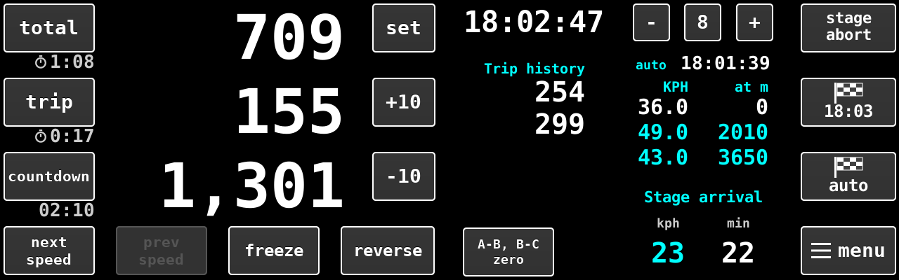
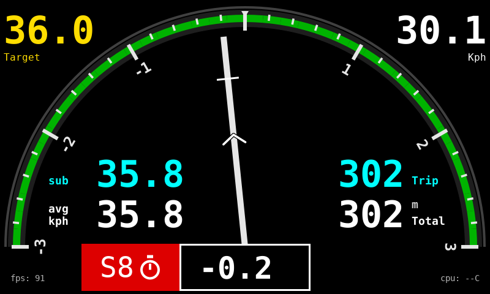
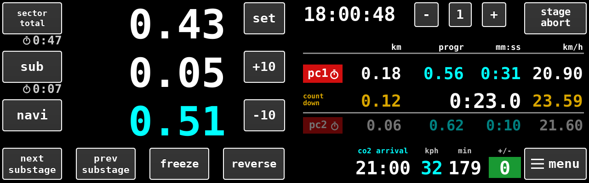
The box works in one of three rally types, chosen under
settings › Rally type. The choice changes the navigation and
segments pages.
| Rally type | Use it for | In this manual |
|---|---|---|
| greek | Stages start at roadbook boxes with zero distance at a set minute; speeds change at roadbook boxes. | Programming, Starting, Navigating |
| italian | A stage is a sector from one time control (CO) to the next, made of untimed driving, timed trials (pc), average trials (pm), stamp checks (ct) and the closing time control (co). | Programming, Starting, Navigating |
| surrey | Stages start at landmarks (with unspecified distances) within roadbook boxes displaying cumulative distance; scored on time taken. | Programming, Starting, Navigating |
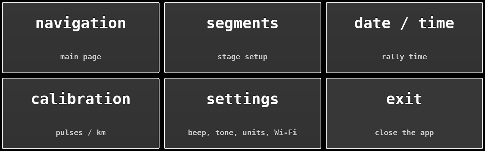
Every page has a menu key at the bottom right. Press it to reach the main menu.
Numbers are typed on the on-screen keypad: C clears a selected entry and the
arrow key deletes one character. There is no Enter key: an entry is saved when you tap another box
or leave it alone for a second.
Select greek rally from the settings page and then select segments from the
main menu. The segments page will display a Greek flag. The system defaults to metres (rather than
km) but this can be overridden in settings.
Enter every roadbook box in the stage, or only the rows with speed changes. With every box entered, Beep Assist navigation (when on) beeps ahead of each box.
add distance and type the cumulative distance at which each
row ends, separated by semicolons: 540;1320;2010 (or 0.54;1.32;2.01 in
km). Later entries are appended or inserted as needed.add distance.next speed on the navigation page.Entries save automatically under the stage number shown. A running stage cannot be edited.
upload stage – currently only available on phone app.
clear stage empties the stage shown; clear all empties every stage.
Both ask first.
A stage can be started via preprogrammed autostart (using the time programmed in the Segments section), or by pressing the Start Now or Start On Next Minute
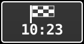
button.Autostart: When autostart is armed the button
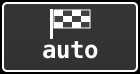
will appear as black on white, and the word auto (cyan) appears next to the start time. Autostart can be quickly toggled on/off using the Autostart button on the navigation display. When Autostart is not armed the word manual (orange) appears next to the start time. A start time that has passed, with nothing armed or running, is crossed out in red. Afterstart now the panel reads
manual and the time of the press; the time shrinks to leave a gap before the word.
What happens with autostart:
Start on Next Minute: The Start on Next Minute button constantly updates to show the next whole minute. Pressing it sets a type of autostart at that minute.
What happens with Start on Next Minute:
Start Now: Pressing it starts a stage immediately.
What happens with Start Now:
Regular on-schedule start – in most instances this will be handled correctly by a pre-programmed autostart which resets the distances and timer at the allotted start time.
Late arrival at start – there are 2 ways to handle this scenario.
Obstructed start – if traffic or the car may make you late to the first timing point, press the next-minute start key (flag with a time) on the start line instead of using autostart, and move off shortly before departure. Total and Trip reset when pressed; timing starts at the minute.
Distance and elapsed time since the start. Press to zero the distance.
Shows intermediate distance and time. Press to zero it; the old figure appears in the Trip history column. Trip also restarts at every speed change.
Distance and time to the next speed change. If that change is not automatic, press
next speed there.
next speed is used to move to the next speed manually. prev speed undoes
the last speed change. The buttons can also be used to override automated speed changes.
+10 / -10 move Total and Trip 10 m per press; set allows a
precise distance to be entered for Total (Trip unchanged). During a stage, corrections apply across
average speeds and timing errors.
freeze stops the distances from counting while lit; clocks and timers continue –
use it after a navigation error. On release, counting resumes from the frozen figures.
reverse makes Total and Trip (as well as countdown) count backwards. It is typically
used when reversing after overshooting a junction, as the box only counts pulses and has no concept
of direction. Freeze overrules Reverse if both are pressed. The buttons display as black on white
when active and a whooping sound is emitted.
Where a rally is measured on an AB, BC basis and this option is selected in settings, the
A-B, B-C zero button appears under the Trip history. Pressing this during a stage when a
timing mark or timing marshal is seen sets the timing error in the driver's display to zero, so that
the average speed calculation is made independently between each timing mark.
The popup shows the error to remove and the adjustment already applied.
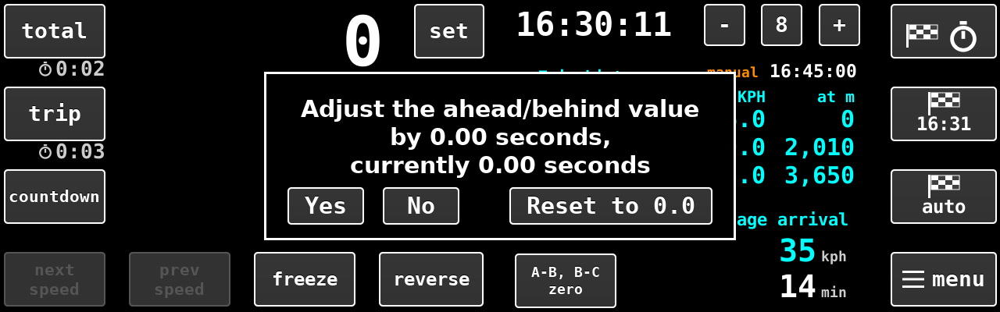
Yes zeroes the needle at this instant.Reset to 0.0 removes the adjustment so the true error shows.No changes nothing.The column shows the selected stage, the start time of the stage and autostart status, the distances at which speed changes commence and the speed needed (and allotted time) to reach the next stage with 1 minute to spare.
The driver display has two pages in Greek mode: one between stages (navigation) and one in a stage.
With no stage running there is no needle. The top left shows the arrival speed: the speed needed to reach the next stage with a minute to spare, the same figure as the co-pilot's Stage arrival. The distances and averages are Trip and Total.
The stage display differs where marked.
During a timed stage the needle shows how far ahead/behind the driver is in seconds. If the error exceeds the current gauge scale (changeable from 1–3 seconds in settings) the needle will stay pinned far left (or far right if ahead) and the scale will expand. The red logo shows the stage number (S1, S2 …). The cyan sub average is your average speed since the current speed section began, that is, the distance driven divided by the time elapsed since the last speed change in the stage data (see Entering Greek stage data). It restarts at each speed change, so it goes with the time error; the white average is the average since the start. The chevron slides up the needle and reaches the row end line, the short cross-bar on the needle, as the box ends.
One chevron rides the needle. At the start of each row it sits 20% of the way up the needle; as the row is driven it slides up toward the row end line, arriving as the row ends, then drops back to the start for the next row. It only counts the row down: it does not show how far ahead or behind you are (the needle does that) and there is only ever one. Between stages there is no needle and no chevron.
While an autostart is pending, a T- hh:mm:ss countdown shows mid-display with
Early Departure ENABLED or DISABLED beneath, depending on whether a regular autostart
or a start on next minute is triggered.
Italian rallies have many short back-to-back timed trials, so each time-control section is programmed as linked substages.
The substage types:
| Type | What it is | How the box treats it |
|---|---|---|
| navi (grey) | Untimed driving between controls. | A required speed is worked out from the sector's total duration so the car arrives mid-way through its arrival minute. |
| pc (red, stopwatch) | Timed trial between two pressure tubes. Between linked pcs a single tube ends one pc and starts the next. | Speed is worked out from the subsector's duration. |
| pm (yellow) | Average speed check with unknown timing points. | Duration is worked out from the given speed. |
| ct (blue) | Stamp check: no time. | Untimed, like navi. |
| co (green) | The time control that ends the sector; arrive in your minute. | The last row; the co arrival time is worked out from the card. |
Select italian rally from the settings page and then select segments from the
main menu. The segments page will display an Italian flag. The system defaults to km (two decimals)
but this can be overridden in settings.
Enter every substage on the organiser's Times and Distance Table (TDT) starting from the row after the opening time control, up to and including the closing one (here co 2). The opening co line (0.00 km) is not entered but its time goes in Start time.
add distance and type the cumulative distance (progr) at
which each substage ends, separated by semicolons: 1.20;1.38;1.44;6.80;9.20;15.60;18.40
(or 1200;1380;1440;6800;9200;15600;18400 in metres). Later entries are appended or
inserted as needed; take care inserting a distance inside an existing pc or pm which will get recalculated.add distance.Typed figures are white on dark boxes; worked-out figures grey. Entries are saved automatically. A running sector cannot be edited.
upload stage – currently only available on phone app.
clear stage empties the sector shown; clear all empties every sector.
Both ask first.
A sector is started at the time control by pressing the start now button
during the departure minute. The sector counter counts from that whole minute (11:30:40
counts as 11:30:00) and sets an elapsed time at 30s into the minute, targeting arrival in the middle
of the arrival minute. Sector total and sub distances zero; navi distance does not zero at the same
time. The stage now key reads stage abort when a sector is in progress.
next substage to enter the next substage (pc, pm etc). NB that this sets the
sector total distance counter to the total distance on the card's progr entry. The navi
distance increments independently – any variation will give a guide to calibration errors as
long as Navi is not reset.next is pressed early or by mistake press prev substage to undo it.Distance and elapsed time in the sector, matching the card's progr value. Press to zero.
Distance in the current substage; zeroes at every new substage when next substage
is pressed. Press to zero.
Past the end of a substage, the count down km (for example +0.04) and time (for
example +0:01.4) turn red and count up. Both reset at the next substage. Before a sector
starts, the preview opens on the sector's first row.
An independent distance counter. Press to change the distance.
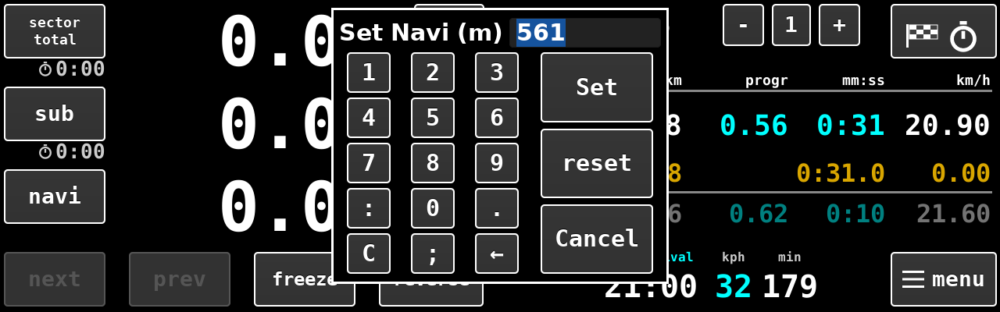
next substage is pressed to move to the next substage. prev substage
undoes the change.
+10 / -10 move sector total and sub 10 m per press (navi unchanged);
set allows a precise distance to be entered for sector total.
freeze stops the distances from counting while lit; clocks and timers continue –
use it after a navigation error. On release, counting resumes from the frozen figures.
reverse makes the distances count backwards. It is typically used when reversing after
overshooting a junction, as the box only counts pulses and has no concept of direction. Freeze
overrules Reverse if both are pressed. Operates on sector total, sub and navi distances. The
buttons display as black on white when active and a whooping sound is emitted.
Two pages: one on navi, ct and co rows, and one inside a pc or pm. All figures are in km and kph.
A legend to the right of the green box reads countdown inside a pc or pm and arrival on navi rows. The gauge scale widens when the time error is bigger than the Gauge range.
The top left shows the row's target speed and, under it in yellow, how long the row takes at that speed (m:ss). There is no needle and the middle box is empty: on these rows crews drive flat out and a lead of many minutes is normal. The right-hand box shows the minutes in hand: green when ahead, red when behind.
Inside a pc or pm the needle and the error box give the error from the start tube, in seconds. The yellow time is how long the pc takes. The box on the right counts down the seconds to the line, from 5.0 to 0.0.
Inside a pc or pm one chevron sits at the start of the needle, with the line tick further up. It waits there until 5 seconds are left to the line; then it slides up the needle to the tick, arriving as the countdown reads 0.0. It only does the countdown, and there is only one. On navi, ct and co rows there is no needle and no chevron.
For British road-book regularities such as the GoodBrook Surrey Hill Ramble. The roadbook gives one running total per section, from 0 at the section start, never reset at a box. A stage starts at a loosely given point in a box (“about 75 m after box 11”), runs over several boxes and finishes at a point in a known box, perhaps with no printed distance. The crew writes the time taken on the yellow sheet. Surrey works as greek except as noted here.
| greek | surrey | |
|---|---|---|
| Readouts | total / trip / countdown | total (from the
now press) / trip / navi, the roadbook's running total, zeroed only at a
section start. countdown moves to the stage column. |
| Stage start | on a time (autostart) or now | now
pressed at the landmark (autostart still works if a start time is entered) |
| Speed changes | at the row distance, auto or next | the same, at the roadbook total of the box |
| Stage end | on distance, or next on the last row | next
pressed at the finish landmark; on distance if not pressed |
| Result | ahead / behind | ahead / behind while driving, then time taken
(9:20.6) |
Select surrey rally from the settings page and then select segments from the
main menu. The segments page will display a Union Jack and is otherwise as in
Programming Greek Stages.
Start time is usually blank: a surrey stage has no start minute.
22307).auto: box totals are known, so they happen by
themselves.53897, the total at box 63).| Stage | from | rows (box, to, kph) | finish |
|---|---|---|---|
| SS1 | 9148 | 11, 18566, 60 | at box 23 |
| SS2 | 22307 | 27, 24024, 65 · 30, 26752, 50 auto | at box 32 |
| SS3 | 49732 | 59, 53897, 58 | signpost in box 62 |
upload stage, clear stage and clear all work as in greek.
A surrey stage is started with now (Start Now) as the car passes the start landmark.
Autostart still works if a start time is entered.
| When | Press | What the box does |
|---|---|---|
| Section start (box 1, box 66) | navi › reset | navi = 0. |
| At a box, if navi is out | navi › set | navi set to the box figure (total unchanged). Always do this at the start box. |
| Passing the start landmark | now | Stage clock and distance start; navi carries on. Row 1 is shortened to end at its box, so later speed changes match the roadbook. |
| A speed change at a box | nothing (auto) | Changes speed at the box.
next and prev work as in greek. |
| Passing the finish landmark | next on the last row | The stage ends; time taken shows under Trip history and on the phone. It freezes at the finish. |
Rows: total (from the now press) / trip /
navi (cyan, the roadbook running total; tap to set or reset). During a stage,
countdown (metres and minutes to the next speed change or finish) sits at the foot of the
stage column; between stages Stage arrival shows there. Under the Trip history (last four),
time taken (shown as ss and the stage number) for the last stage stays until the next one
finishes. The phone shows navi and time taken. Beeps are measured from navi. check total
shows in orange where manual normally is.
| Situation | What to do |
|---|---|
| navi total out at the start (a wrong turn before the stage) | Best: set the start
box's figure as you pass it, then press now. Left uncorrected, the stage runs
correctly from the press but automatic speed changes come at the wrong place: for each one, press
prev if it comes early and next at the box. A large error (over
300 m before the start box figure, or past the end of row 1) also shows
check total. |
| A wrong turn inside the stage | Correct total with set or
±10, as in greek, and navi separately with navi › set
at the next box. |
next pressed too early at the finish | Press prev: the stage
carries on as if nothing happened. Works until navi passes the last row's to. |
Finish passed without pressing next | The stage ends by itself at the last row's to, as in greek, and time taken is to that point: right for a printed finish distance, but for a finish inside a box it is the time to the box end, not the landmark. |
now pressed before the real start | As greek: press now again,
confirm the abort, then press now at the real landmark. navi is unaffected. |
The section target time (90 min for each section on the GoodBrook roadbook) is not shown.
The Surrey stage pages are the Greek ones: in a stage, the needle, error box and red S logo; between stages, the arrival speed, the navi logo and no needle.
As in greek. One chevron rides the needle: it starts 20% up at the beginning of each row and slides up toward the row end line as the row is driven, arriving as the row ends. In Surrey a row ends at a box or at the finish, so the chevron counts down to the next box. Between stages there is no needle and no chevron.
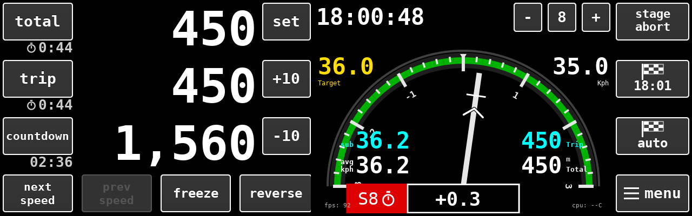
With Force single display on, the driver's gauge shares the co-pilot screen. Keys work as
on the navigation page. Left: Total / Trip / next with +10, set and
-10; along the foot: prev speed, freeze, reverse
and A-B, B-C zero; middle: rally clock and − 1 + stage selector above the
gauge; right: the three flag keys and menu. No Trip history or stage table; other pages
are reached through menu. A pending start's countdown shows over the gauge.
Connecting: link the box and phone over Wi-Fi, then open the address shown on the settings page (or scan its QR code). The page top reads connected in green when linked. Added to the phone's home screen, it runs full screen.
Sounds: the top key reads Tap for sound until the phone allows audio, then toggles Sound is on / off.
Nero2.1: the phone's stage selectors run 1–99 like the box; the phone does not yet show the italian columns, and its screenshots below are from 27 October (before Nero2.1).
Six tabs mirror the box: Navi (navigation, with total, trip, freeze, reverse, the three
flag keys and A-B, B-C zero), Seg (segments), Time (date / time), Cal
(calibration), Set (settings, plus download logs) and Drv (driver gauge
with Total and Trip). On Navi and Drv, press Total or Trip to zero it.
Navi
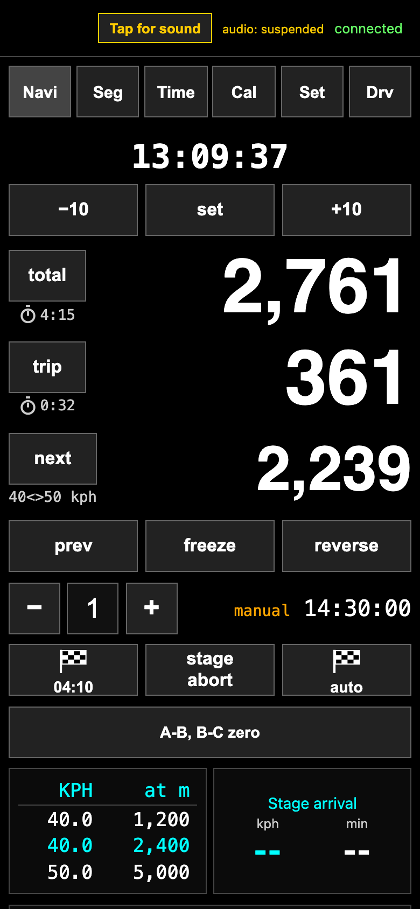
Drv
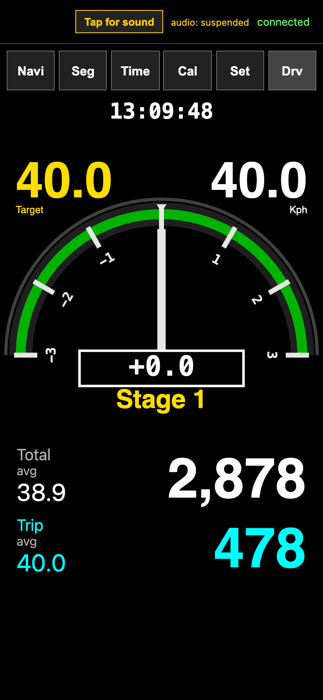
Seg
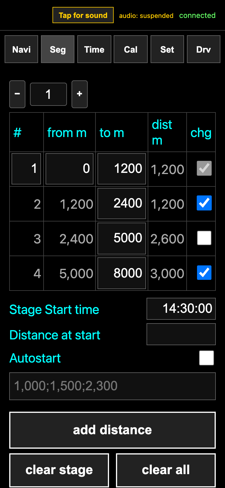
Set
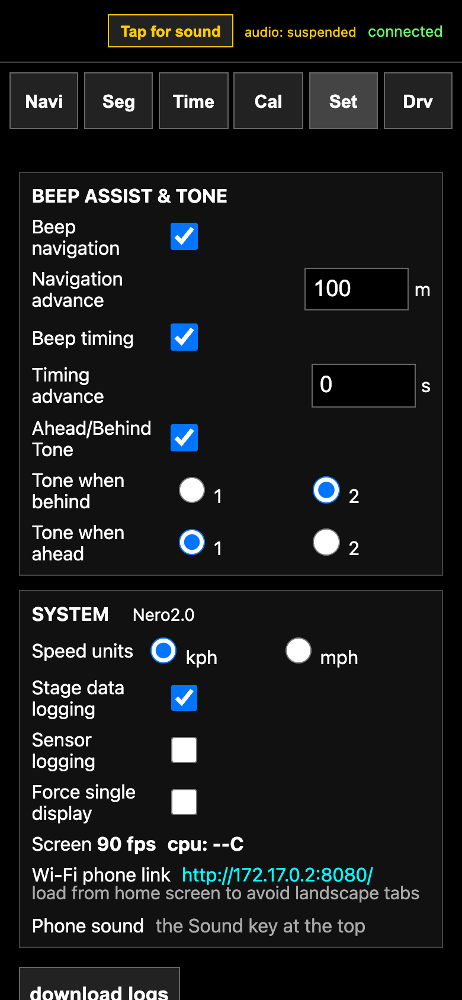
Time
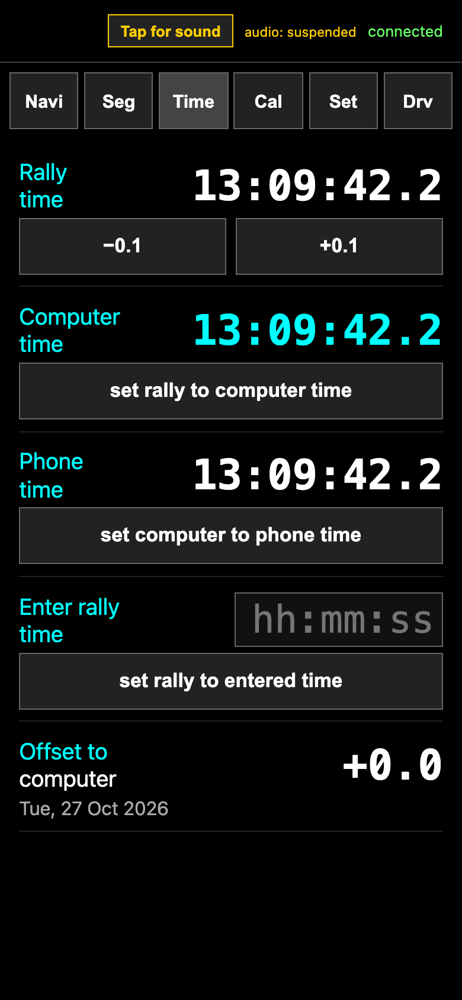
Cal
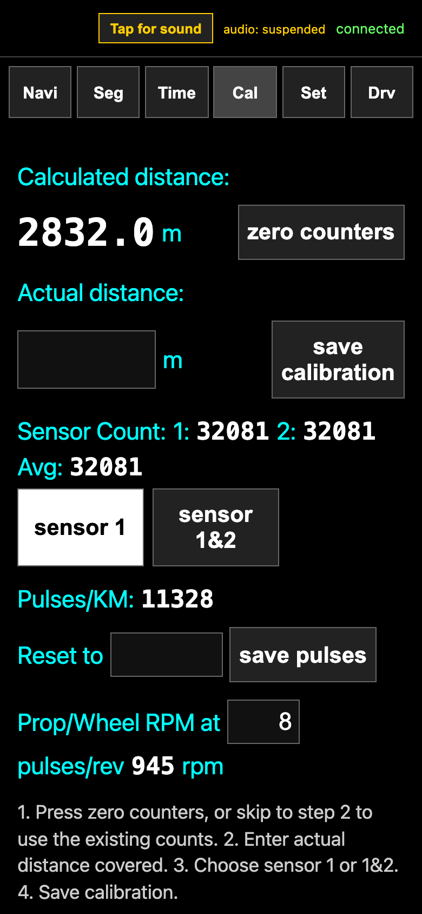
Beep Assist uses the segments to figures as the roadbook boxes; nothing more is entered. Switch it on in settings. Navigation double-beeps a set distance before each box. Timing single-beeps when the car should pass it, revealing distance errors from wheel spin, corner cutting or a skipping sensor. Beeps follow Total, so +10, -10 or set moves them all.
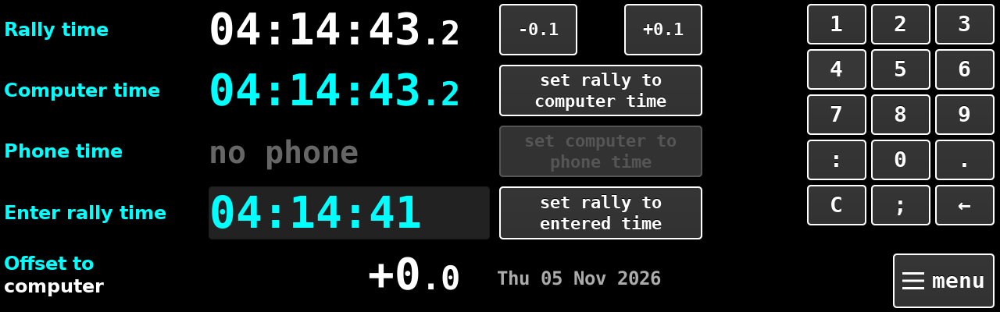
Rally time (white) is the clock all stages are timed against; Computer time (cyan)
is the Raspberry Pi's clock; Phone time is the linked phone's, or no phone.
Offset to computer is how far rally time is ahead (+) or behind (−), for example
+2.3, or -11:49.2 beyond a minute.
set rally to computer time makes them equal.hh:mm:ss (or hh:mm, no tenths) in Enter rally time and press
set rally to entered time. Today's date is used.set computer to phone time sets the Pi's clock from the phone, leaving the rally
clock as it is. Grey until a phone connects. It needs the Pi's usual password-free permission to
set its clock; without it the box says The computer clock could not be set and nothing
changes.-0.1 / +0.1 trim the rally clock by a tenth of a second; hold to
repeat. Saved at once.
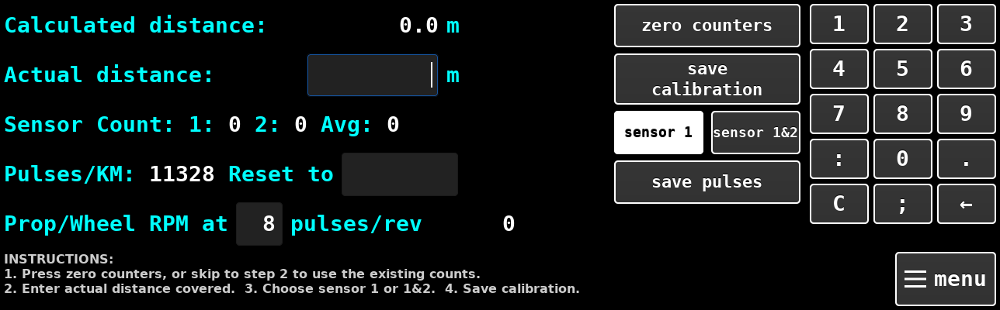
zero counters (or skip, to use the distance since the last Total reset).sensor 1 or sensor 1&2 (shown in white).save calibration.The page shows the calculated distance, each sensor's count and the pulses per km in use. If the
distance is out of range or nothing was counted, save calibration silently does
nothing, so check the pulses per km figure has changed.
If the figure is known, type it in Reset to and press save pulses; no
driving needed. Zero or less is ignored.
The last row shows propshaft or wheel rpm from sensor 1. Type the sensor's pulses per revolution in the small box.
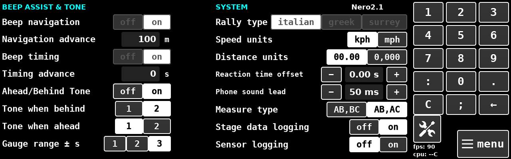
Each switch shows its present state lit. Changes are saved at once.
next, the greek next, start now when moving at
5 kph or more, and the surrey start and finish. It does not apply to autostart, ±10,
set or prev. Positive means the crew press late. Find your figure by
comparing the box's pc times with the official results.add distance.The column foot shows the screen update rate and Pi temperature. The spanner key (keypad, bottom left) opens Setup.
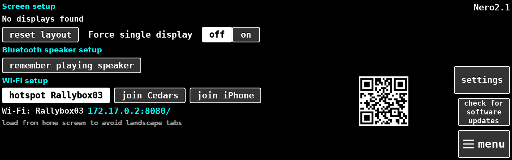
rotate and a touch keyboard
switch; reset layout; Force single display puts the gauge on the co-pilot screen
from the next program start.remember playing speaker stores the speaker
now playing; connect / disconnect it later.check for software updates – closes the program and checks for an update
(needs internet).settings returns to the settings page.Agreed or planned, but the box does not do these today:
upload stage on the segments page (greyed): loading a stage from a file.Seen while making this manual in the sandbox (30 October 2026). Each needs your judgement: is it what you want?
| # | What was seen | Where |
|---|---|---|
| 1 | Fixed 31 October: the greek Beep Assist no longer sounds in italian. | Italian, Beep timing on |
| 2 | Nothing in this manual has been tried on the real box, a phone, or in mph. | Everywhere |
next speed at a box; prev speed; +10 / set; freeze; abort. Check the countdown key's
two figures against the segments page.next substage at the first tube and follow pc 1's count down to its end; press late at a tube
and watch the time turn red; prev substage; drive a pm; finish at the co and compare the
arrival time with the card.